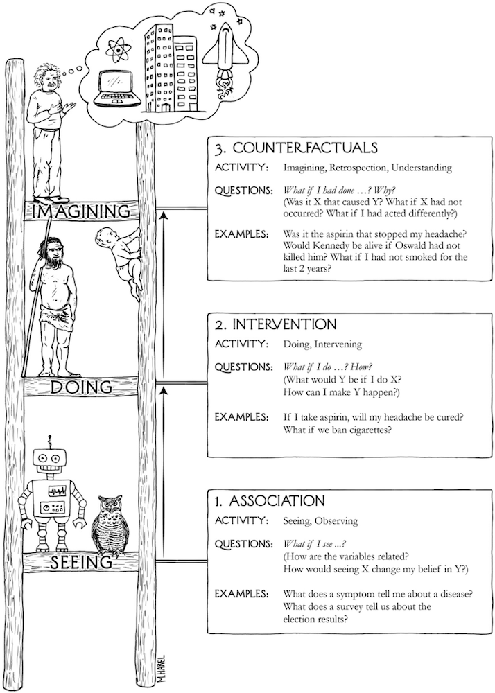

In The Book of Why, Judea Pearl offers a deceptively simple idea: all scientific questions about causation can be sorted onto three rungs of a ladder.
The first rung is association (seeing). What co-occurs with what? In Pearl's notation, this is P(Y|X): the probability of Y given that we observe X. The second is intervention (doing). What happens if we actively change something? This is P(Y|do(X)): the probability of Y given that we force X to happen, severing it from everything that would otherwise influence it. The difference between those two expressions (a single word, do) is the difference between watching a patient take a drug and making them take it. The third rung is counterfactual (imagining). What would have happened if things had gone differently? Or for you Marvel fans out there, What If?
Each rung requires more from us than the one below it. You cannot answer a Rung 2 question with Rung 1 data. And you cannot answer a Rung 3 question without a causal model that lets you reason about worlds that never happened.

That is the ladder. Now here is the part that isn't directly obvious.
If you are asking a research question of any form, by default you are somewhere on this ladder. Every study that asks a research question is implicitly positioned on one of these rungs the moment it asks that question.
The only choice a researcher has is whether to acknowledge that positioning, or to stumble past it unaware.
Before getting there, though, it is worth pausing on a category of work that sits outside the ladder entirely, not below it, just prior to it. Pure descriptive studies: a case report documenting an unusual presentation, a prevalence survey estimating how common a condition is, a surveillance report tracking incidence over time. These are not asking about the relationship between two variables. They are asking what exists and how much of it there is. Descriptive studies are hypothesis-generating. They are the empirical jumping off point if you will from which the questions that climb the ladder eventually emerge. You cannot ask P(Y|X) until someone has established that X and Y exist and are worth measuring. Descriptive work is what makes Rung 1 a viable question in the first place. That said, the label "descriptive" gets applied loosely; any study conditioning on a second variable (say age) has already stepped onto Rung 1.
Observational studies (e.g., cohort studies, case-control studies) are designed on Rung 1: they measure what occurred, not what was made to occur. No one randomized the exposure. No one used the do-operator. What they estimate is P(Y|X), the association between cytomegalovirus and autism or GLP-1 on incidence of diabetes 2. Unfortunately, researchers routinely write conclusions as though they had estimated P(Y|do(X)), and reviewers and readers often let it pass. Pearl's ladder makes the slip legible. When a cohort study reports that X "leads to" Y, or that X "increases risk of" Y, ask: did the design actually support that claim? Usually the honest answer is that it estimated an association, and the causal interpretation is an inference that requires additional assumptions the research may or may not have defended.
Clinical trials deserve more than the one-line treatment the RCT usually gets, because the trial pipeline is itself a journey up the ladder. A phase I trial is not really asking a Rung 2 question at all, it's asking "what do we see when we give patients this compound?" That is dose-response, tolerability, pharmacokinetics. It is sophisticated Rung 1 work. A phase II trial begins reaching toward Rung 2: does this intervention do something to the outcome we care about? But it is typically underpowered to answer that cleanly, and its controls are often loose enough that confounding remains a genuine concern. However, it should be noted that some phase II trials can be randomized, and it really just depends on the purpose of the trial. Even still, the phase III randomized controlled trial is where Rung 2 is finally, fully earned: a prespecified outcome, adequate power, true randomization, a control arm. Randomization is precisely what severs X from everything that would otherwise confound it; it is the do-operator in action and what the trial estimates is genuinely P(Y|do(X)). And then there is the question that follows every successful phase III trial, which is almost never asked explicitly but is always being asked implicitly: would this patient, had they not received the treatment, have had a worse outcome? That is a counterfactual (Rung 3) and it is the question animating every individual treatment decision a clinician makes at the bedside. The trial answers a population-level Rung 2 question. The doctor is standing on Rung 3 every time she applies it.
Systematic reviews and meta-analyses inherit the rung of their constituent studies. Pooling ten observational studies with a very precise confidence interval does not produce a Rung 2 answer. The precision is real; the causal claim is not. A meta-analysis of RCTs is Rung 2, it is pooling genuine P(Y|do(X)) estimates. A meta-analysis of cohort studies is Rung 1, regardless of how impressive the I² statistic looks.
None of this is meant to suggest that work outside or low on the ladder is worthless. The ladder is not a hierarchy of importance. It is a hierarchy of questions. Descriptive work does what no other study can: it creates the conditions under which causal questions become worth asking. Rung 1 work answers Rung 1 questions. The problem is only ever when work from one level is used to answer questions from another, when P(Y|X) is reported as though it were P(Y|do(X)), or when a phase I safety signal gets treated as evidence of efficacy.
Pearl's ladder gives us a way to read any paper with one question first, before the abstract, before the methods: which rung is this question on, and does the design have the equipment to answer it?
Everything else follows from there.
References
- Pearl J, Mackenzie D. The Book of Why: The New Science of Cause and Effect. New York: Basic Books; 2018.
- Pearl J. Causality: Models, Reasoning, and Inference. 2nd ed. Cambridge: Cambridge University Press; 2009.
- Bareinboim E, Correa JD, Ibeling D, Icard T. On Pearl's hierarchy and the foundations of causal inference. In: Geffner H, Dechter R, Halpern J, eds. Probabilistic and Causal Inference: The Works of Judea Pearl. New York: ACM; 2022:507-556.
- Hernán MA, Robins JM. Causal Inference: What If. Boca Raton: Chapman & Hall/CRC; 2020.
- Hu W, Zhou X, Wu P. A potential outcomes perspective on Pearl's causal hierarchy. arXiv preprint. 2026. arXiv:2601.20405.
- Pearl J. The three-layer causal hierarchy. Technical note. University of California, Los Angeles; 2013.